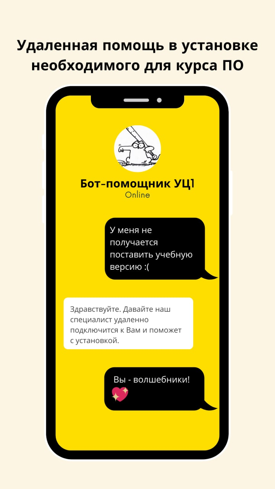
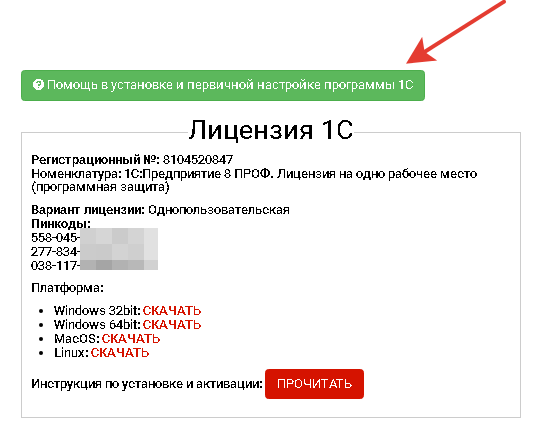

Помощь в установке и первичной настройке программы
Не тратьте время и нервы на технические сложности — доверьте установку и настройку программы нашим экспертам!
Зачем?
- Экспертная поддержка: наш технический специалист подключится к вашему компьютеру удалённо и обеспечит быструю установку программ для прохождения курса;
- Быстро и просто: мы настроим программу так, чтобы вы могли сразу приступить к обучению без задержек и трудностей;
- Экономия времени: забудьте о технических сложностях — мы всё сделаем за вас!

Как воспользоваться?
- Оплатите услугу: выберите опцию «Помощь в установке и первичной настройке программы» и оформите заказ;
- Обратитесь за помощью: после оплаты нажмите кнопку «Помощь в установке и первичной настройке программы» в личном кабинете;
- Поделитесь деталями: в открывшемся чате с тех. специалистом опишите, на каком этапе возникли сложности, и укажите номер ID из приложения AnyDesk.
